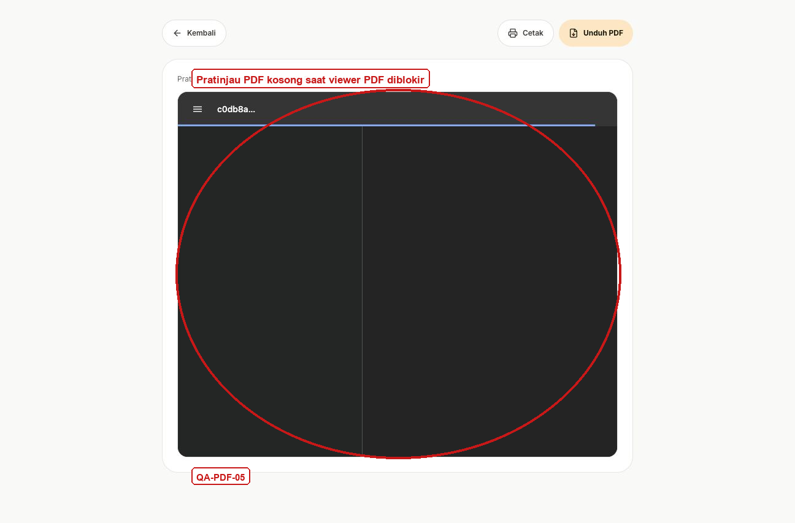
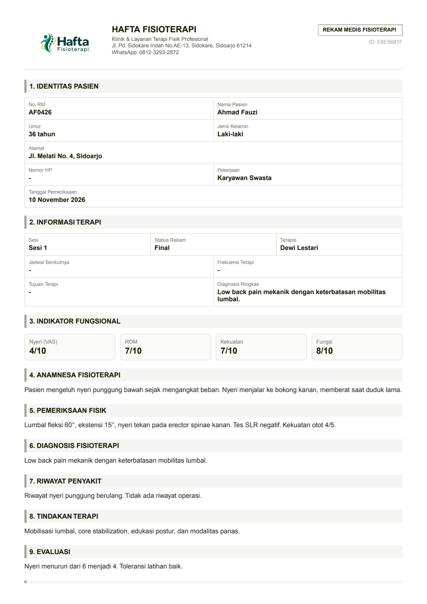
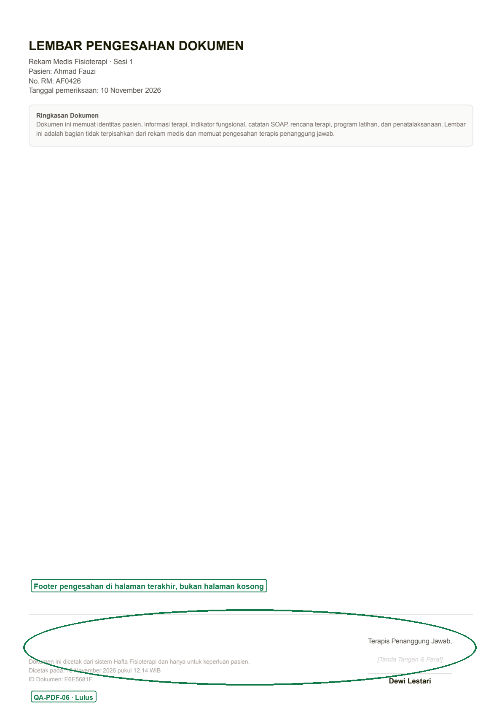
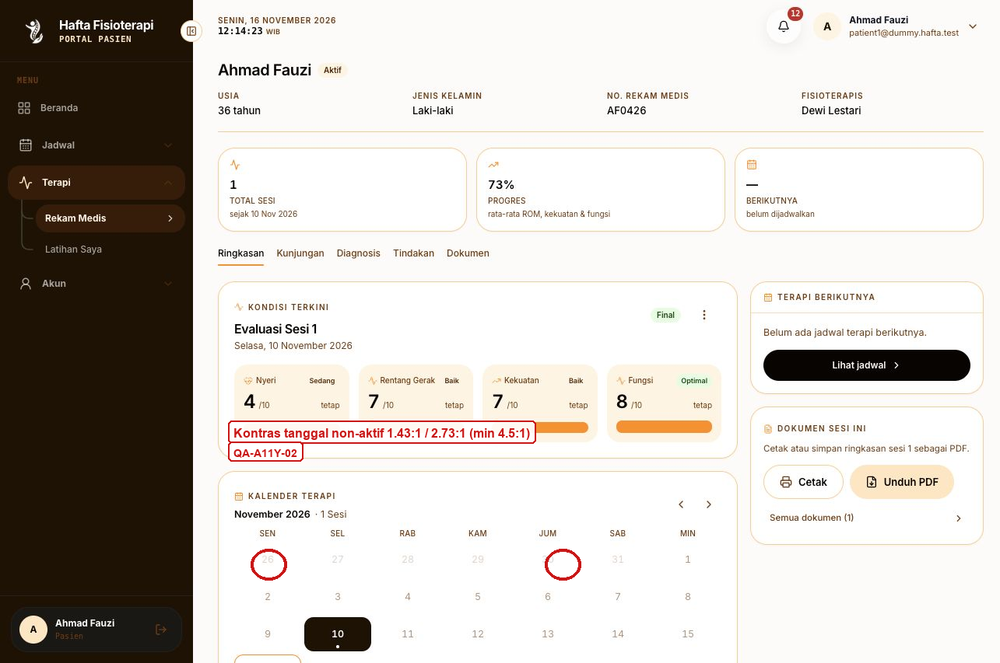
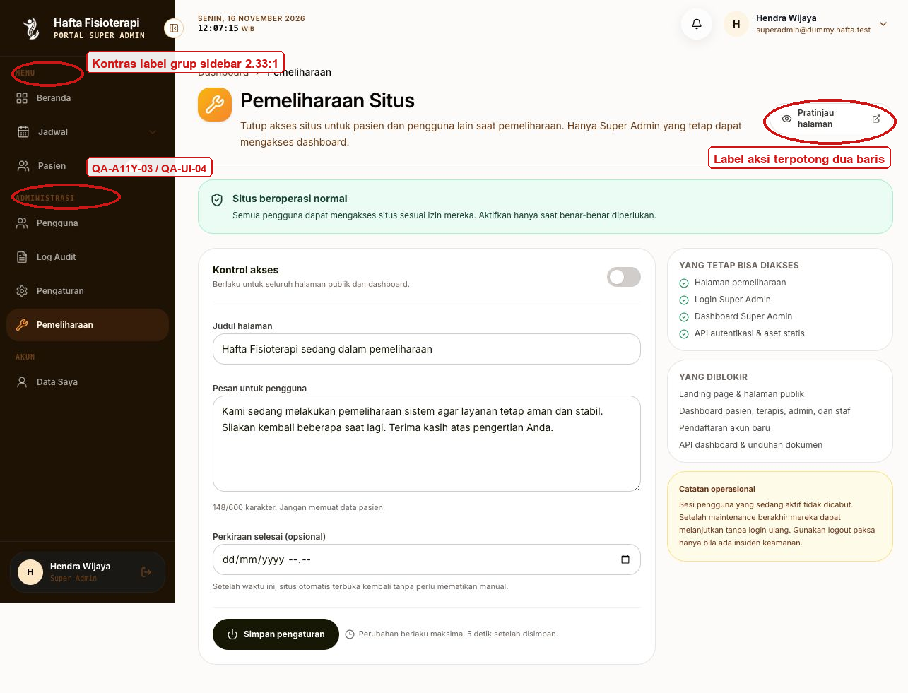
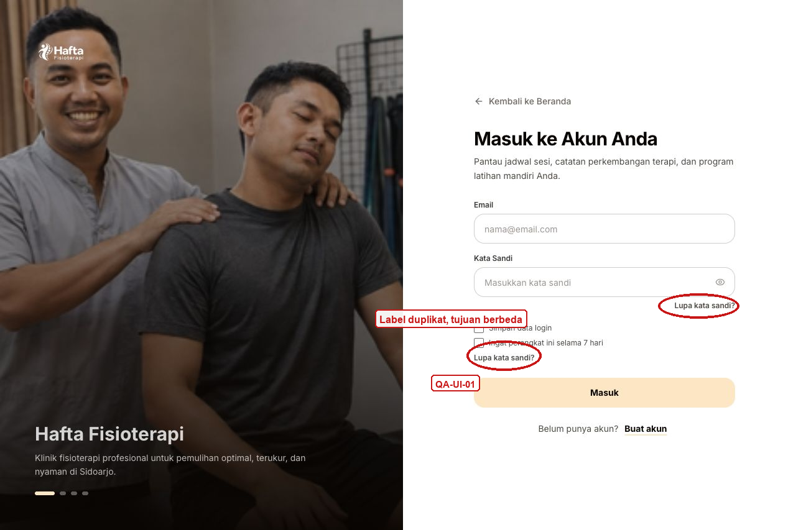
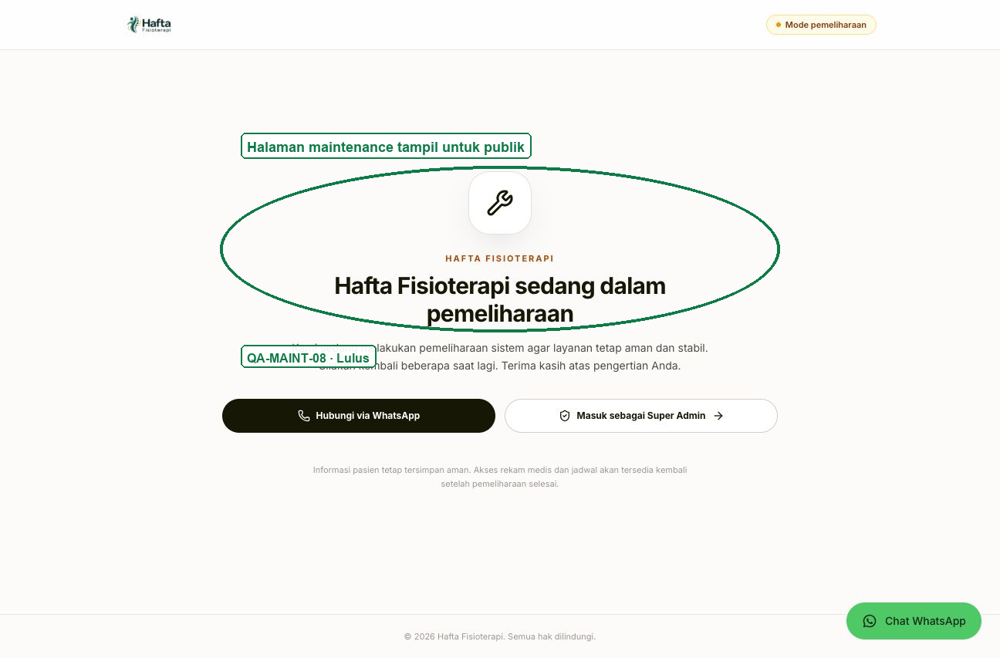
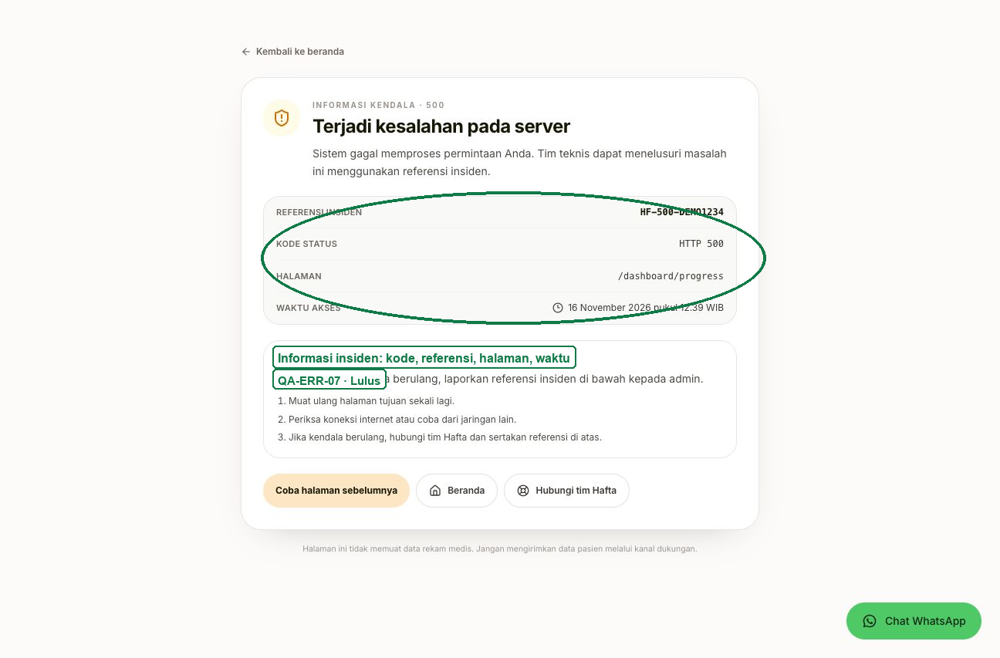

Audit menemukan 1 critical dan 8 high pada otorisasi klinis, alur cetak/PDF, dan pengalaman error. Sebanyak 22 temuan diperbaiki dan diverifikasi ulang. Aplikasi lulus typecheck, ESLint tanpa error, 34 test otomatis, dan build produksi. Landing page serta dashboard pasien mencapai Accessibility Lighthouse 1.00 setelah perbaikan kontras dan ARIA.
Staging dapat dilanjutkan setelah rate limiting, CSP, dan Mobile Gate ditutup. Produksi memerlukan review retensi rekam medis, backup/restore, dan monitoring insiden.
| Runtime | Next.js 16.3.0 (App Router, Turbopack), React 19 |
|---|---|
| Database | Neon PostgreSQL + Drizzle ORM (development) |
| Auth | Better Auth, role-based + resource scope |
| Browser QA | Chromium in-app, viewport desktop 1280–1296 px |
| Data uji | Hanya akun dummy *.dummy.hafta.test dan rekam medis sintetis |
| Quality gate | typecheck, eslint, vitest, next build, Lighthouse |
| Area | Route | Status | Catatan |
|---|---|---|---|
| Landing & halaman publik | /, /layanan, /tentang, /kontak, /faq, /privacy, /terms | Aktif | Lighthouse a11y/SEO 1.0. |
| Autentikasi | /login, /register, /forgot-password, /reset-password | Aktif | Reset password 1 jam; verifikasi email manual. |
| Dashboard pasien | /dashboard | Aktif | Jadwal, progres, catatan, notifikasi, consent, latihan. |
| Jadwal pasien | /dashboard/appointments | Aktif | Pengajuan, ubah jadwal, pembatalan; guard server. |
| Rekam medis pasien | /dashboard/progress | Aktif | Hanya FINALIZED + patient_visible; PDF disinkronkan. |
| Form awal & riwayat | /dashboard/intake, /dashboard/history | Aktif | Draft, review, consent privasi. |
| Profil & keamanan | /dashboard/profile, /dashboard/security | Aktif | MFA opt-in, sesi aktif, revoke sesi. |
| Dokumen pasien | /dashboard/documents | Sebagian | Route hanya untuk staf; pasien belum memiliki daftar dokumen sendiri. |
| Daftar & detail pasien | /dashboard/patients | Aktif | Search server-side, filter, pagination, scope terapis. |
| Intake review | /dashboard/intake | Aktif | Scope therapist diperbaiki pada audit ini. |
| Rekam medis staf | /dashboard/progress | Aktif | SOAP, finalisasi, amandemen, PDF. |
| Jadwal staf | /dashboard/appointments, /dashboard/calendar | Aktif | Kalender, edit, complete session, jadwal kerja terapis. |
| Dokumen klinis | /dashboard/documents | Feature-gated | Aktif setelah konfigurasi Cloudflare R2. |
| Pengguna & peran | /dashboard/users | Aktif | Search, suspend/reactivate, role; detail user belum ada. |
| Audit log | /dashboard/audit-logs | Aktif | Read-only + pagination. |
| Pengaturan & maintenance | /dashboard/settings, /dashboard/maintenance | Aktif | Maintenance baru; toggle + pesan + jadwal selesai. |
| Halaman error & status | /status, /forbidden, /unauthorized, /maintenance, 404/500 | Aktif | Referensi insiden tanpa data sensitif. |
| Role/permission editor, staff directory, user detail | /dashboard/roles, /dashboard/staff, /dashboard/users/[id] | Belum dibuat | Sesuai status PRD: permission v1 code-defined. |
Severity mengikuti dampak terhadap keamanan data pasien, integritas rekam medis, dan kemampuan pengguna menyelesaikan tugas utama.
| ID | Judul | Severity | Status | Kategori |
|---|---|---|---|---|
| SEC-01 | Terapis dapat mengakses dan menulis rekam medis pasien yang tidak di-assign | Critical | Fixed | Security |
| SEC-02 | Daftar intake dan PDF intake tidak dibatasi ke pasien yang di-assign | High | Fixed | Security |
| SEC-03 | Kredensial masuk dapat masuk ke URL sebelum React ter-hidrasi | High | Fixed | Security |
| FUNC-04 | Tautan “Lihat jadwal” pada rekam medis mengarah ke route yang tidak ada | High | Fixed | Functional |
| PDF-05 | Cetak jadwal menghasilkan template rekam medis dengan isi klinis kosong | High | Fixed | Print/PDF |
| PDF-06 | Tombol Cetak rekam medis tidak membuka dialog cetak | High | Fixed | Print/PDF |
| PDF-07 | Isi PDF tidak identik dengan tampilan pasien | High | Fixed | Print/PDF |
| PDF-08 | Footer pengesahan berulang di setiap halaman / berpotensi terpisah dari isi | High | Fixed | Print/PDF |
| A11Y-09 | Kontras tanggal kalender non-aktif gagal WCAG AA | Medium | Fixed | A11y |
| A11Y-10 | Label grup sidebar memiliki kontras 2.33:1 | Medium | Fixed | A11y |
| A11Y-11 | aria-controls menunjuk ID yang tidak dirender | Medium | Fixed | A11y |
| A11Y-12 | Nama aksesibel tombol notifikasi tidak memuat angka yang terlihat | Medium | Fixed | A11y |
| A11Y-13 | Tombol tampilkan kata sandi tidak dapat dijangkau keyboard | Medium | Fixed | A11y |
| UI-14 | Dua tautan “Lupa kata sandi?” dengan tujuan berbeda | Medium | Fixed | UI/UX |
| UI-15 | Label opsi “ingat” ambigu dan tidak sesuai perilaku | Medium | Fixed | UI/UX |
| UI-16 | DashboardPageHeader tidak mengikuti kontrak visual terkunci | Medium | Fixed | UI/UX |
| UX-17 | Dropdown AppSelect tidak memindahkan fokus ke opsi | Low | Fixed | A11y |
| SEO-18 | robots.txt tidak tersedia | Low | Fixed | Functional |
| SEC-19 | Rate limiting login/reset belum terlihat pada aplikasi | Medium | Open | Security |
| SEC-20 | Content-Security-Policy belum diterapkan | Medium | Open | Security |
| MAINT-21 | Belum ada mode pemeliharaan global untuk mengunci akses pengguna | High | Fixed | Functional |
| ERR-22 | Halaman error belum mencakup 401/403/500/503 dan informasi insiden | High | Fixed | Functional |
| DATA-23 | Nama terapis pasien dapat berasal dari assignment lama | Medium | Fixed | Data Integrity |
| FUNC-24 | Pencarian pasien hanya memakai nama | Low | Fixed | Functional |
| FUNC-25 | Pasien belum memiliki halaman dokumen sendiri | Low | Open | Functional |
| UI-26 | Dokumen desain dan implementasi mengalami drift | Low | Open | UI/UX |
| PERF-27 | Beberapa primitive UI tidak terpakai dan menambah permukaan perawatan | Low | Open | Performance |
| RESP-28 | Mobile Gate belum diuji menyeluruh pada 320/360/390/430 px | Info | Deferred | Responsive |
/dashboard/progress
`assertScope()` hanya memeriksa keberadaan pasien. Pengecekan assignment pada `getTherapyProgressById` tidak memakai `activeUntil`, sehingga assignment lama tetap dianggap sah.
CWE-639 / Broken Access Control
Terapis hanya boleh membaca/menulis pasien dengan assignment aktif (activeUntil IS NULL).
Terapis dapat membuat, mengubah, dan memfinalisasi rekam pasien mana pun yang UUID-nya diketahui.
Wajibkan assignment aktif pada semua operasi klinis; tambahkan test authorization untuk terapis unassigned.
/dashboard/intake
`getReviewableIntakes()` mengembalikan seluruh intake; `getIntakeDetailForPdf()` hanya memeriksa role, bukan assignment.
CWE-639 / IDOR
Therapist hanya melihat intake pasien assigned; ADMIN/SUPER_ADMIN sesuai permission.
Therapist dapat melihat daftar intake seluruh klinik dan mengekspor PDF intake pasien lain.
Filter daftar dan detail dengan assignment aktif; audit setiap ekspor intake.
/login
Form autentikasi tidak memiliki atribut method, sehingga submit native sebelum hidrasi menjadi GET dan menaruh email/password di query string.
CWE-598 / Sensitive Information in Query String
Password tidak pernah muncul di URL, history, referer, atau log.
Pada koneksi lambat, submit sebelum hidrasi menghasilkan /login?email=...&password=...
Tambahkan method="post" pada seluruh form autentikasi dan pertahankan validasi server-side.
/dashboard/progress
Tautan memakai href="/dashboard/schedule"; route tersebut tidak ada di App Router.
HTTP 404
Tautan menuju /dashboard/appointments.
Pasien melihat halaman 404 dari dalam panel.
Gunakan route canonical /dashboard/appointments; tambahkan lint/route-check untuk href internal.
/dashboard/appointments
Hook cetak jadwal merender `MedicalRecordDocument` dengan pain/ROM/kekuatan/fungsi = 0 dan field SOAP kosong.
QA-PDF-05 / Data integrity
Dokumen jadwal memakai template jadwal dan hanya memuat data jadwal.
PDF berjudul REKAM MEDIS FISIOTERAPI dengan nilai klinis 0 dan catatan kosong.
Gunakan halaman /dashboard/appointments/[id]/print; hapus renderer rekam medis dari appointment card.
/dashboard/progress
`iframeRef` dideklarasikan tetapi tidak pernah dipasang ke elemen iframe; fallback menavigasi tab ke blob PDF.
QA-PDF-06 / UI wiring
PDF dicetak melalui iframe tersembunyi tanpa meninggalkan halaman.
Halaman berpindah ke blob PDF atau tidak terjadi apa-apa.
Pasang ref pada iframe tersembunyi dan revoke object URL setelah cetak.

/dashboard/progress
Tampilan pasien menampilkan informasi terapi, rencana terapi, dan program latihan; PDF lama hanya memuat identitas + SOAP.
QA-PDF-07 / Data parity
Cetak dan unduh memuat field yang sama dengan tampilan pasien, termasuk informasi terapi.
Rencana terapi dan program latihan tidak ada di PDF; informasi sesi/terapis tidak lengkap.
Satu renderer PDF + kirim extras (therapyInfo, treatmentPlan, homeProgram) dari tampilan pasien.

/dashboard/progress/[recordId]/print
Footer React-PDF memakai `fixed`, sehingga digambar pada setiap halaman. Footer HTML memakai mt-auto tanpa aturan page-break.
QA-PDF-08 / Pagination
Satu halaman: footer di bawah. Lebih dari satu halaman: lembar pengesahan terakhir tersendiri, bukan halaman kosong.
Footer berulang dan dapat menumpuk isi atau terpotong.
Render dua tahap: hitung halaman, lalu pilih footer dalam halaman atau lembar pengesahan tersendiri.

/dashboard/progress
Lighthouse: foreground #e3d5c7 / #b99673 pada background putih, rasio 1.43:1 dan 2.73:1.
Lighthouse color-contrast / WCAG 1.4.3
Rasio minimal 4.5:1 untuk teks normal.
Tanggal di luar bulan dan tanggal tanpa terapi sulit dibaca.
Gunakan text-stone-600/500 tanpa opacity dan bedakan status dengan latar, bukan opacity.

/dashboard
Lighthouse: #7f4100 pada #230f00 (2.33:1) untuk label MENU/ADMINISTRASI dan role pengguna.
Lighthouse color-contrast / WCAG 1.4.3
Label sekunder pada permukaan gelap tetap ≥4.5:1.
Label grup dan role hampir tidak terbaca.
Gunakan text-white/60 atau token kontras tinggi pada permukaan charcoal.

/dashboard
Lighthouse aria-valid-attr-value: aria-controls="nav-menu-Terapi" tanpa elemen dengan id tersebut.
Lighthouse aria-valid-attr-value
aria-controls hanya diisi saat target ada dan memiliki id yang sesuai.
Screen reader menerima relasi ARIA yang invalid.
Tambahkan id pada panel submenu dan hanya set aria-controls saat panel terbuka.
/dashboard
Lighthouse label-content-name-mismatch: tombol berlabel “Buka notifikasi” menampilkan angka 12.
Lighthouse label-content-name-mismatch
Nama aksesibel memuat teks yang terlihat, mis. “Buka notifikasi, 12 belum dibaca”.
Pengguna screen reader tidak mendengar jumlah notifikasi.
Sertakan jumlah belum dibaca dalam aria-label.
/login
Tombol mata memakai tabIndex={-1} tanpa alternatif keyboard.
WCAG 2.1.1 / Keyboard
Toggle password dapat difokus dan diaktifkan dengan keyboard.
Pengguna keyboard tidak dapat memeriksa kata sandi yang diketik.
Hapus tabIndex negatif dan tambahkan aria-pressed.
/login
Satu tautan menuju /forgot-password; satu tautan lagi menuju WhatsApp, dengan label identik.
QA-UI-01 / Duplicate affordance
Satu aksi utama reset password; bantuan tambahan diberi label berbeda.
Pengguna bingung dan dapat masuk ke kanal yang salah.
Pertahankan satu tautan reset; ubah kanal bantuan menjadi “Butuh bantuan masuk?”.

/login
“Simpan data login” hanya menyimpan email; “Ingat perangkat ini selama 7 hari” tidak memperpanjang idle timeout 45 menit.
QA-UI-15 / Misleading copy
Label menjelaskan efek nyata: mengingat email vs mempertahankan sesi saat browser ditutup.
Ekspektasi pengguna terhadap keamanan dan durasi sesi tidak sesuai.
Ubah copy dan dokumentasikan perilaku session guard.
Semua /dashboard/*
PRD §16A mewajibkan gradient amber→orange dan ikon h-7 w-7 text-white; implementasi memakai rounded-full charcoal dengan ikon h-5.
QA-UI-16 / Design contract
Semua header dashboard seragam sesuai kontrak.
Header berbeda dari design contract dan antar halaman memberi ukuran ikon berbeda.
Standarkan wrapper header; hapus override ukuran/warna ikon per halaman.
Form staf
Menu dirender lewat portal; fokus tetap pada trigger, sehingga Tab menelusuri sisa halaman sebelum opsi.
WCAG 2.1.1 / Focus order
ArrowDown/Up membuka dan memindahkan fokus; Escape mengembalikan fokus ke trigger.
Navigasi keyboard tidak dapat diprediksi.
Fokuskan opsi terpilih/pertama saat dibuka dan tangani Arrow/Home/End.
/robots.txt
Lighthouse SEO 0.83 dengan audit robots-txt tidak valid/kosong.
Lighthouse robots-txt
robots.txt valid dan men-disallow area privat.
Crawler tidak mendapat aturan crawl; area dashboard tidak secara eksplisit ditutup.
Tambahkan MetadataRoute.Robots + sitemap.
/login, /forgot-password
Tidak ditemukan limiter terpusat; percobaan login berulang hanya dibatasi oleh library auth.
OWASP A07 / Rate limiting
Rate limit per IP/akun pada login, register, reset, dan resend verification.
Brute force/credential stuffing bergantung pada konfigurasi eksternal.
Implementasikan rate limit di runtime deployment (bukan in-memory) dan audit kegagalan login.
Global
Header keamanan berisi nosniff/frame/referrer, tetapi belum ada CSP.
OWASP A05 / CSP
CSP teruji untuk Next.js, Better Auth, dan aset gambar eksternal.
Risiko XSS/third-party script lebih tinggi bila ada regresi.
Terapkan CSP nonce/hash di staging, uji, lalu produksi; jangan gunakan unsafe-inline tanpa kajian.
/maintenance
Sebelum audit, tidak ada mekanisme menutup situs; semua role tetap dapat mengakses selama gangguan.
QA-MAINT-21 / Availability
Super Admin dapat mengaktifkan maintenance; hanya Super Admin yang dapat mengelola.
Tidak tersedia; risiko data diakses saat sistem tidak stabil.
Tambahkan setting, halaman maintenance, bypass khusus Super Admin, audit, dan test.

/status, /forbidden, /unauthorized
Hanya 404 dan error boundary generik tanpa referensi insiden, tanpa halaman 403/401.
QA-ERR-22 / Error UX
Setiap status memiliki halaman jelas + referensi aman yang dapat dilaporkan.
Pengguna tidak tahu apakah masalah izin, sesi, atau server.
Buat katalog error + halaman status + referensi HF-<kode>-<digest>.

/dashboard/progress
Query assignment tidak memfilter activeUntil dan tidak mengurutkan assignment terbaru.
QA-DATA-23
Tampilkan terapis dengan assignment aktif terbaru.
Pasien dapat melihat nama terapis yang sudah tidak menangani.
Filter activeUntil IS NULL dan orderBy activeFrom desc.
/dashboard/patients
Filter search hanya ilike(fullName), padahal tabel menampilkan No. RM dan email.
QA-FUNC-24
Cari berdasarkan nama, nomor rekam medis, atau email.
Petugas tidak menemukan pasien saat mencari No. RM.
Perluas filter server-side ke fullName/medicalRecordNumber/email.
/dashboard/documents
Route hanya mengizinkan staf; tidak ada halaman dokumen patient-visible.
QA-FUNC-25 / Requirement gap
Sesuai spec, pasien dapat melihat dokumen miliknya yang ditandai patient_visible.
Fitur ditunda; tidak ada kebocoran data, tetapi gap requirement.
Implementasikan daftar/unduh dokumen patient-visible dengan object authorization.
Global
Dokumen menyebut emerald/Poppins; implementasi memakai palet Hafta oranye dan font Inter.
QA-UI-26 / Documentation drift
Satu sumber kebenaran visual yang disetujui pemilik proyek.
Audit visual/regresi sulit dinilai konsisten.
Putuskan palet/font resmi, perbarui DESIGN-SYSTEM dan DESIGN-REFERENCES, lalu kunci token.
n/a
Tidak ada import langsung dari aplikasi; PaginationBar adalah implementasi yang dipakai.
QA-PERF-27 / Dead code
Komponen mati dihapus atau didokumentasikan sebagai rencana.
Menambah bundle potensial dan kebingungan kontributor.
Hapus jika tidak direncanakan; pertahankan hanya jika ada roadmap jelas.
Global
Tool browser sesi audit tidak menyediakan emulasi viewport mobile; verifikasi hanya desktop 1280–1296 px dan review kode Tailwind.
QA-RESP-28 / Test coverage
Mobile Gate 320/360/390/430 + tablet 768/834 + desktop 1024/1280/1440.
Belum dapat dibuktikan penuh pada sesi ini; tidak ditemukan overflow pada desktop.
Jalankan matriks viewport di QA berikutnya dan simpan screenshot per breakpoint.